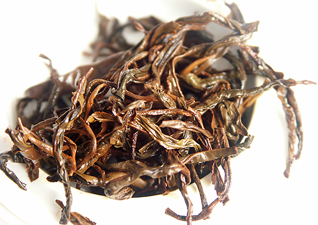

Hadong Hwangcha
Typ: celolisty
Druh: Olong
Původ
Země původu: Jížní Korea
Oblast původu: Boseong
Pěstování
Strom
Druh stromu: pestovany
Věk stromu: 1000
Výroba
Sklizeň: 2. sklizen
Fermentace: castecne fermentovany
Oxidace: plne oxidovany
Příprava Čaje
Množství: 4g
Voda
Množství: 200ml
Teplota: 85°C
Nalevy
1 . nalev 60s ,
2 . nalev 60s ,
3 . nalev 70s ,
dalsi nalevy 80s .
Nádobí
Materiál: Tokoname
Kalíšek
Průměr: 10cm
Hloubka: 10cm
Objem:
Konvička
Objem: 200ml
VRÁTIT SE